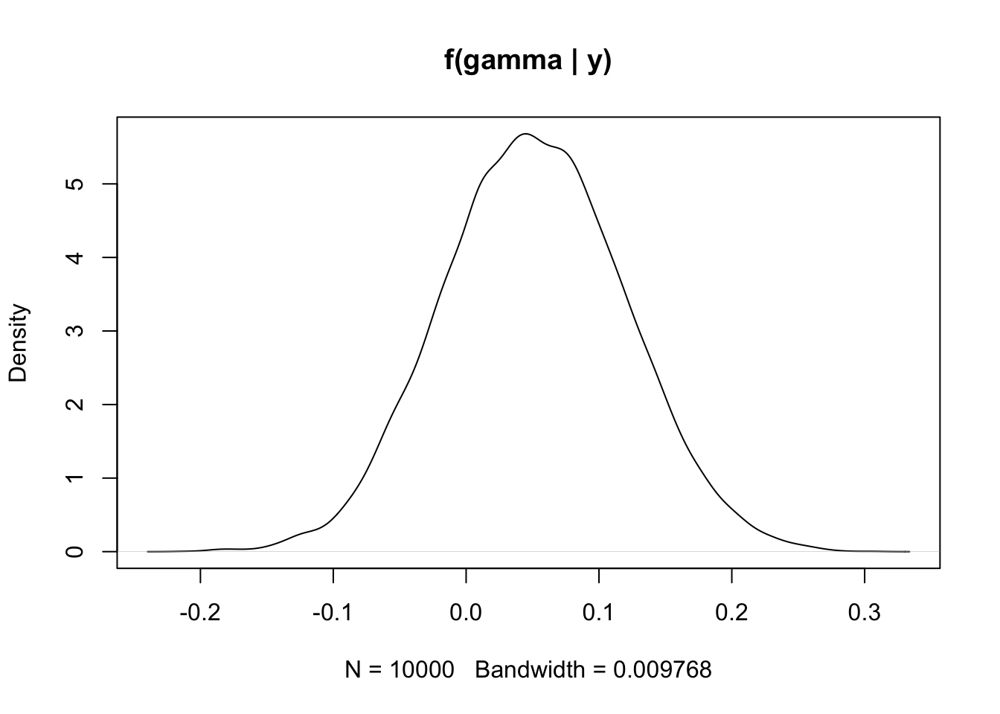
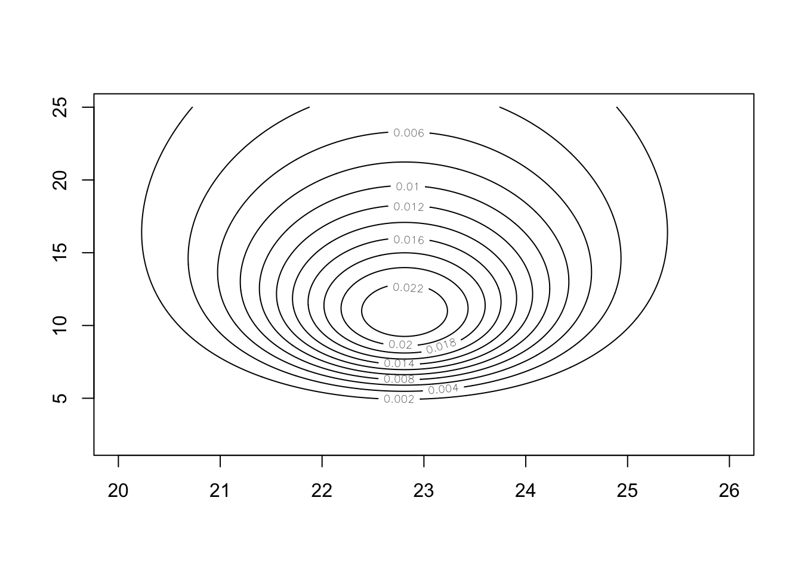
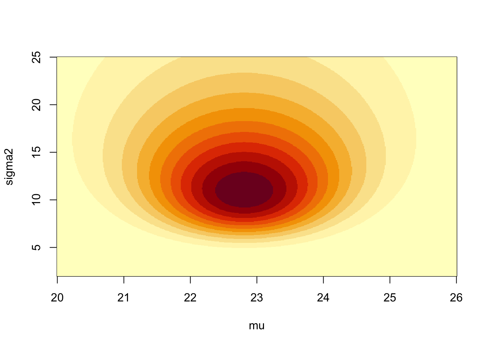
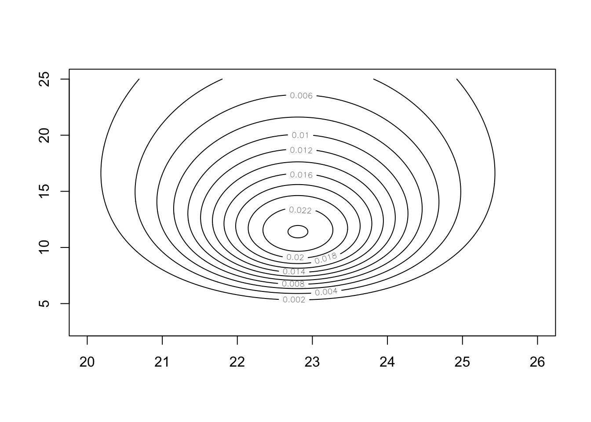
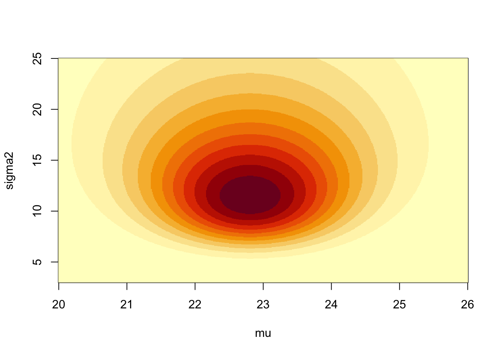

Monte Carlo is the art of approximating an expectation by the sample mean of a function of simulated random variables.
MY COMMENTS: Main idea in one sentence: MC is using independent samples to approximate something we are interested in.
Definition in probability terminology: suppose we have a random variable (univariate or multivariate, discrete or continuous) \(X\), and we are interested in the expected value of a function of it, \(E[g(X)]\) (e.g. \(Y = g(X)\)), then we can approximate it with
where \(x_1, \ldots, x_n\) are \(n\) random samples of \(X\).
If we know the original density function \(f(x)\), then we can use \(\int g(x) f(x) \, dx\) to get \(E[g(x)]\). But ONLY if there is an explicit form of \(f(x)\). MC methods are useful because we are working with situations when we don’t know the \(f(x)\) (i.e. the posterior distribution) but we still want to know \(E[g(x)]\) (e.g. the posterior mean).
Why can we use this idea in statistics inference? Many quantities of interest may be cast as expectations: it is possible to express all probabilities (expectation of indicator variable taking on 0 or 1 only), integrals (expectation of random variables), and summations (expectation of discrete random variables) as expectations!
Ex) \(P(X > 1) = \int_1^\infty f(x) \, dx = \int_1^\infty I(x > 1) f(x) \, dx\), where \(I(x > 1) = g(x) = \begin{cases} 1 \text{ if } x \ge 1 \\ 0 \text{ if } x < 1\\\end{cases}\)
Why do we need Monte Carlo approximation in Bayesian inference?
Summary statistics (mean, median, mode, standard deviation, quantiles) of the posterior distribution of the parameter(s) are used to conduct Bayesian inference. However, the samples from the posterior distribution can tell us a lot more than that! Examples include:
\(P(\theta \in A \mid \mathbf{y})\) for some arbitrary set \(A\) of interest to us;
posterior distribution of \(\left| \theta_1 - \theta_2 \right|\);
posterior distribution of \(P(\theta_1 < \theta_2)\)
We usually cannot obtain the exact values of these posterior quantities, but once we have posterior samples generated from the posterior distribution, all of these posterior quantities of interest can be approximated to an arbitrary degree of precision using the Monte Carlo method!
For example, to find the posterior density of \(\left| \theta_1 - \theta_2 \right|\), we would need the joint distribution of \((\theta_1, \theta_2)\). But, \(f(\theta_1, \theta_2)\) may be hard to find. So instead, by using Monte Carlo methods, we can generate samples of \(\theta_1\) and \(\theta_2\) from their respective posteriors and then estimate lots of things using these samples. This is super easy!
*Said another way, we can use a sample from \(P(\theta \mid \mathbf{y})\) to approximate the actual posterior distribution. This empirical density can be used to estimate any quantity of interest, e.g. $P(< _0) = ?? $ just look at percent of sample that meets this condition.*
Monte Carlo approximation in Bayesian inference
Once we obtain \(iid\) posterior samples \(\theta^{(1)}, \ldots, \theta^{(m)}\) from \(p(\theta \mid \mathbf{y})\),
The empirical distribution of \(\{\theta^{(1)}, \ldots, \theta^{(m)}\}\) is known as a Monte Carlo approximation to \(p(\theta \mid \mathbf{y})\).
Prior knowledge: Roughly 90% women have 0 to 4 children in this country, and the median number of children for each women is 2.1. So it is reasonable to pick the prior mean \(\alpha / \beta\) close to 2.1 and values of \(\alpha\) and \(\beta\) that result a probability of \(P(0 < \theta < 4)\) near 0.9. One set of such parameter values would be \(\alpha = 2\), \(\beta = 1\).
# set hyperparameters# -> we can easily set the mean for gamma dist, so picking parameters that give a mean close to what the median isalpha<-2beta<-1# check to see if values match the given information about the population# -> mean = alpha / beta = shape / ratealpha/beta
Here, the probability and mean match pretty good. In this example, it was easy to choose values. If that is not the case, then we can solve for the hyperparameters to match the given situation (or at a minimum try many combinations). The goal is to take into account the extra info for our prior (in this case we were given a measure of center and a probability)
# set function to solve# -> need two things to be true: mean = 2.1 and P(theta < 4) = 0.9# -> for the second, uniroot() solves for zeros, so just subtract 0.9f<-function(rate){# using this parameterization, the mean is guaranteed to be 2.1 and we want the rate that gives us the desired probability (i.e. rate is going to be variable)# -> theta (which is our x value), is fixed at 4 in this equationpgamma(q =4, shape =2.1*rate, rate =rate)-0.9}# solve for the desired rate (and thus the shape as well)(beta_solved<-uniroot(f, interval =c(0,4))$root)
# plot two possible priors to comparecurve(dgamma(x, shape =alpha, rate =beta), from =0, to =6, col ="blue", xlab ="theta", ylab ="f(theta)")curve(dgamma(x, shape =alpha_solved, rate =beta_solved), col ="orange", from =0, to =6, add =TRUE)text(x =3, y =0.35, labels ="chosen", col ="blue")text(x =3, y =0.325, labels ="solved", col ="orange")
95% quantile-based credible interval of \(\theta\)
What would you do? numerical integration? Monte Carlo approximation?
# set other known info# -> using chosen hyperparameters from aboven<-44y_bar<-1.5
# part a -> P(theta < 2 | y)# theoretical results# -> we know what the posterior is, so can just find probability directly from that distributionalpha_post<-alpha+n*y_barbeta_post<-beta+npgamma(q =2, shape =alpha_post, rate =beta_post)
[1] 0.993132
# OR we can generate a sample from the posterior distribution and approximate using MC methodsM<-10000sample_post<-rgamma(n =M, shape =alpha_post, rate =beta_post)mean(sample_post<2)
[1] 0.992
# part b -> E(theta | y)# theoretical resultsalpha_post/beta_post
# part c -> equal tails 95% credible interval# theoretical resultsqgamma(p =c(0.025, 0.975), shape =alpha_post, rate =beta_post)
[1] 1.173437 1.890836
# MC methodsquantile(x =sample_post, probs =c(0.025, 0.975))
2.5% 97.5%
1.179246 1.900757
Example 2
Data: 54% of the respondents in the 1998 General Social Survey reported their religious preference as Protestant, leaving non-Protestants in the minority. Respondents were also asked if they agreed with a Supreme Court ruling that prohibited state or local governments from requiring the reading of religious texts in public schools. Of the \(n = 860\) individuals in the religious minority (non-Protestant), \(y = 441\) (51%) said they agreed with the Supreme Court ruling, whereas 353 of the 1011 Protestants (35%) agreed with the ruling.
\(\theta\): the population proportion agreeing with the ruling in the minority population.
quantity of interest: log-odds \(\gamma = \log \frac{\theta}{1 - \theta}\).
Approximate the distribution of \(f(\gamma \mid \mathbf{y})\) and summarize it.
# sample directly from posterior distribution -> theta | y ~ Beta(442,420)M<-10000sample_post_theta<-rbeta(n =M, shape1 =442, shape2 =420)# approximate posterior mean using MC methodsmean(sample_post_theta)
[1] 0.512717
# transform sample to the log odds -> gamma = log(theta / (1 - theta))sample_post_gamma<-log(sample_post_theta/(1-sample_post_theta))# plot density curve of sampledensity(sample_post_gamma)%>%plot(main ="f(gamma | y)")

# summarize new empirical distributionsummary(sample_post_gamma)
Min. 1st Qu. Median Mean 3rd Qu. Max.
-0.21045 0.00504 0.05037 0.05094 0.09744 0.30446
Note that we because we had the posterior distribution for \(\theta\), we could have derived the density function for \(\gamma = \log \frac{\theta}{1 - \theta}\), but this would be a lot of work. Instead, get a posterior sample for \(\theta\) and apply transformation, done!
Example 3
Objective:
It is of interest to compare the number of credit cards owned by millennial in the United States and Canada.
\(Y_{11}, \ldots, Y_{1n_1}\): numbers of credit cards owned by \(n_1\) randomly selected millennials in the US, \(Y_{11}, \ldots, Y_{1n_1} \mid \theta_1 \overset{iid}\sim \text{Poisson}(\theta_1)\).
\(Y_{21}, \ldots, Y_{2n_2}\): numbers of credit cards owned by \(n_1\) randomly selected millennials in Canada, \(Y_{21}, \ldots, Y_{2n_2} \mid \theta_2 \overset{iid}\sim \text{Poisson}(\theta_2)\).
Data and model:
US millennial: \(n_1 = 111\), \(\sum_{i=1}^{n_1} y_i = 217\).
Quantity #1 of interest: \(\text{Pr}(\theta_1 > \theta_2 \mid \mathbf{y_1}, \mathbf{y_2})\);
# sample directly from posterior distributions -> theta_i | y ~ gamma(alpha + sum(y_i), beta + n)M<-10000sample_post_theta1<-rgamma(n =M, shape =219, rate =112)sample_post_theta2<-rgamma(n =M, shape =68, rate =45)# approximate probability using MC methodsmean(sample_post_theta1>sample_post_theta2)
[1] 0.971
Quantity #2 of interest: \(\text{Pr}(\tilde{Y_1} > \tilde{Y_2} \mid \mathbf{y_1}, \mathbf{y_2})\), where \(\tilde{Y_1}\) and \(\tilde{Y_2}\) are future US and Canadian observations.
# generate future observations based on the generated thetas -> y_new ~ Poisson(theta_i)y1_new<-rpois(n =M, lambda =sample_post_theta1)y2_new<-rpois(n =M, lambda =sample_post_theta2)# approximate probability using MC methodsmean(y1_new>y2_new)
[1] 0.4891
# compare to known theoretical results (not shown here)# -> posterior predictive distribution is negative binomial# -> sample directly from thesey1_new_sample<-rnbinom(n =M, size =2+217, mu =(2+217)/(1+111))y2_new_sample<-rnbinom(n =M, size =2+66, mu =(2+66)/(1+44))mean(y1_new_sample>y2_new_sample)
[1] 0.4895
Same idea when working with the posterior predictive distribution. Just get a sample from the posterior distribution for the parameters of interest, then use those as the parameter values when generating new samples using the data distribution.
Simulation of \(\sigma^2\) from the inverse gamma distribution (note that an inverse gamma random variable can be expressed as the reciprocal of a gamma random variable with the same shape and rate parameters. Alternatively, you can use the rinvgamma() in invgamma package.)
Simulation of \(\mu\) from the normal distribution.
# sample from marginal posterior for sigma2 given y vectorM<-10000sample_post_sigma2<-invgamma::rinvgamma(n =M, shape =(n-1)/2, rate =(n-1)*s2/2)
# OR use reciprocal transformationsample_post_sigma2<-1/rgamma(n =M, shape =(n-1)/2, rate =(n-1)*s2/2)
# sample from conditional posterior for mu given sigma2 & y vectorsample_post_mu<-rnorm(n =M, mean =y_bar, sd =sqrt(sample_post_sigma2/n))# plots of the distributionshist(sample_post_sigma2)
Plotting the joint density of \(\mu\) and \(\sigma^2\):
# values of mu and sigma to draw the plot with# -> selected values based on credible intervalsk<-500# number of discrete values to use for calculationsx_mu<-seq(from =20, to =26, length =k)x_sigma2<-seq(from =2, to =25, length =k)# calculate joint distribution functional valuesjoint_posterior<-matrix(NA, nrow =k, ncol =k)for(iin1:k){# P(mu, sigma2 | y) = P(mu | sigma2, y) * P(sigma2 | y)density_sigma2<-invgamma::dinvgamma(x_sigma2[i], shape =(n-1)/2, rate =(n-1)*s2/2)# one sigma value (iterate through these)joint_posterior[,i]=density_sigma2*dnorm(x_mu, mean =y_bar, sd =sqrt(x_sigma2[i]/n))# across all mu values}# draw different plots to visualize surfacecontour(x =x_mu, y =x_sigma2, z =joint_posterior)

image(x =x_mu, y =x_sigma2, z =joint_posterior, xlab ="mu", ylab ="sigma2")

persp(x =x_mu, y =x_sigma2, z =joint_posterior, xlab ="mu", ylab ="sigma2")
Use the same two-step process to simulate from the posterior distribution using \(\mu_0 = 20\), \(\kappa_0 = 0.01\), \(\alpha = 0.1\) and \(\beta = 10\). Report the marginal posterior median, mean, credible intervals for \(\mu\) and \(\sigma^2\). Draw the posterior distribution of \((\mu,\sigma^2)\).
# initialize itemsM<-10000alpha<-0.1beta<-10mu_0<-20k_0<-0.01# sample from marginal posterior for sigma2 given y vector after defining new parametersalpha_post<-n/2+alphabeta_post<-(n-1)*s2/2+n*k_0/(2*(k_0+n))*(mu_0-y_bar)^2+betasample_post_sigma2<-invgamma::rinvgamma(n =M, shape =alpha_post, rate =beta_post)# calculate posterior distribution mean and standard deviationmu_n<-(n*y_bar+k_0*mu_0)/(n+k_0)# sample from conditional posterior distribution for mu given sigma2 and y vectorsample_post_mu<-rnorm(n =M, mean =mu_n, sd =sqrt(sample_post_sigma2/(n+k_0)))# point estimatesc("mean(sigma2)"=mean(sample_post_sigma2), "median(sigma2)"=median(sample_post_sigma2), "mean(mu)"=mean(sample_post_mu), "median(mu)"=median(sample_post_mu))
# initialize sequence for plots for mu and sigma2k<-500x_mu<-seq(from =20, to =26, length =k)x_sigma2<-seq(from =3, to =25, length =k)# initialize matrix of joint posterior density valuesjoint_posterior<-matrix(data =NA, nrow =k, ncol =k)# estimate joint posterior by finding density values for each mu and sigma2 combinationfor(iin1:500){# sample from marginal posterior density of sigma2 given y vectordensity_sigma2<-invgamma::dinvgamma(x_sigma2[i], shape =alpha_post, rate =beta_post)# sample from conditional posterior of mu given sigma2 and y vectorjoint_posterior[, i]<-density_sigma2*dnorm(x =x_mu, mean =mu_n, sd =sqrt(x_sigma2[i]/(n+k_0)))}# draw different plots to visualize surfacecontour(x =x_mu, y =x_sigma2, z =joint_posterior)

image(x =x_mu, y =x_sigma2, z =joint_posterior, xlab ="mu", ylab ="sigma2")

persp(x =x_mu, y =x_sigma2, z =joint_posterior, xlab ="mu", ylab ="sigma2")
Multinomial models with conjugate priors
Experiment:
Fixed number of \(n\) trials.
Each trial is an independent event.
The same \(J\) outcomes are possible in each trial.
Probability of each outcome to occur is constant for each trial.
The multivariate response $Y = $ the number of different outcomes among these trials.
Example:
30 aircrafts that have been in service for 10 years were examined in a safety test. Among them,
19 have no wing cracks (Status 1)
9 have detectable wing cracks (Status 2)
2 have critical wing cracks (Status 3)
Could you estimate the probability of aircrafts having status 1, 2 and 3 after serving for 10 years?
# set hyperparameters that were arbitrarily chosenalphas<-c(3, 2, 1)# calculate posterior parametersposterior_thetas<-y+alphas# find exact posterior mean for each of theta1, theta2, theta3 (theoretical results)(posterior_means<-posterior_thetas/sum(posterior_thetas))
[1] 0.61111111 0.30555556 0.08333333
# now use MC methods to approximatesample_post<-gtools::rdirichlet(n =10000, alpha =posterior_thetas)# approximate posterior means for each thetaapply(sample_post, MARGIN =2, mean)
[1] 0.61171716 0.30504931 0.08323354
# approximate posterior medians and 95% credible intervals for each thetaapply(sample_post, MARGIN =2, FUN =quantile, probs =c(.025, 0.5, .975))
# set hyperparameters to be uniformalphas_unif<-c(1, 1, 1)# calculate posterior parametersposterior_thetas_unif<-y+alphas_unif# find exact posterior mean for each of theta1, theta2, theta3 (theoretical results)(posterior_means_unif<-posterior_thetas_unif/sum(posterior_thetas_unif))
[1] 0.60606061 0.30303030 0.09090909
# now use MC methods to approximatesample_post_unif<-gtools::rdirichlet(n =10000, alpha =posterior_thetas_unif)# approximate posterior means for each thetaapply(sample_post_unif, MARGIN =2, mean)
[1] 0.60469728 0.30395005 0.09135266
# approximate posterior medians and 95% credible intervals for each thetaapply(sample_post_unif, MARGIN =2, FUN =quantile, probs =c(.025, 0.5, .975))
# set hyperparameters -> increasing alphas in prior distribution gives stronger prior inputalphas_strong<-c(30, 20, 10)# calculate posterior parametersposterior_thetas_strong<-y+alphas_strong# find exact posterior mean for each of theta1, theta2, theta3 (theoretical results)(posterior_means_strong<-posterior_thetas_strong/sum(posterior_thetas_strong))
[1] 0.5444444 0.3222222 0.1333333
# now use MC methods to approximatesample_post_strong<-gtools::rdirichlet(n =10000, alpha =posterior_thetas_strong)# approximate posterior means for each thetaapply(sample_post_strong, MARGIN =2, mean)
[1] 0.5443084 0.3225300 0.1331616
# approximate posterior medians and 95% credible intervals for each thetaapply(sample_post_strong, MARGIN =2, FUN =quantile, probs =c(.025, 0.5, .975))